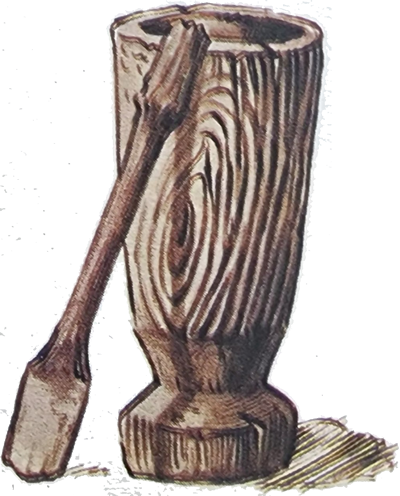
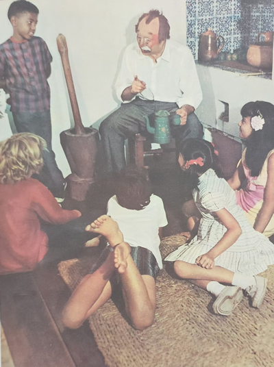
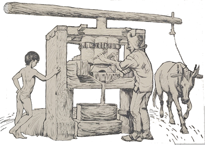
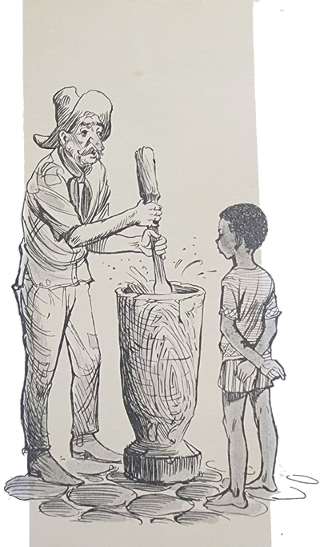
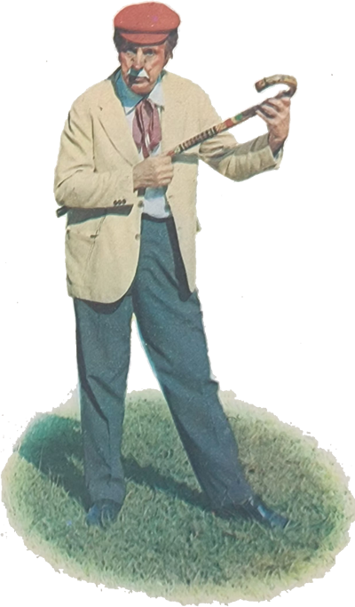

Em outra pequena e antiga cidade, o Arrelia, acompanhado das crianças, lembrou-se de visitar um seu velho conhecido, Nhô Eusébio, e a esposa deste, Nhá Jana. Eram idosos mas sacudidos e habitavam, não muito perto da cidade, um modesto mas bem cuidado sítio onde, ajudados por seus quatro filhos e mais três empregados, plantavam e colhiam uma infinidade de coisas. Também possuíam algumas vacas leiteiras, que eram o orgulho de todos daquele sítio, bem como outros animais e diversas aves. O mais interessante era que Nhô Eusébio introduzira bem poucas inovações ali, conservando a maioria dos usos antigos. Assim, estavam em plena atividade o pilão, a moenda movida a burro, o forno à lenha e o tacho de fazer doces.
Uma vez em que Carlinhos estava pesquisando o lugar, ouviu umas pancadas que vinham de perto e logo ficou curioso em saber do que se tratava. Não demorou muito em encontrar o motivo: Nhô Eusébio socava energicamente farinha e carne-seca no pilão, preparando a paçoca. O menino foi chegando de mansinho e colocou-se perto do sitiante.

- Está gostando? – perguntou Nhô Eusébio, sem parar de bater.
- É divertido – respondeu Carlinhos, demonstrando o maior interesse.
- Divertido? – espantou-se Nhô Eusébio, sorrindo. É muito cansativo, isto sim.
- Não parece. Posso experimentar?
- Se quiser . . . Assim aproveito para ir tomar água sem atrasar o trabalho.

Carlinhos assumiu com indizível prazer a incumbência e começou a bater de gosto. Não custou, porém, a perder o entusiasmo. A falta de costume o traiu e as pancadas foram-se distanciando cada vez mais.
Quando Nhô Eusébio voltou, Carlinhos suava por todos os poros.
- Uai! O que aconteceu? Você está doente? – perguntou espantado o sitiante.
Com muito esforço, ele respondeu que não. Apenas estava cansado. Sentia muito calor. Nhô Eusébio mostrou-se apreensivo:
- Você não está costumado! Nem pensei nisso! Vá descansar, meu filho, vá.
Carlinhos saiu sem dizer palavra, esfregando os braços e fazendo caretas. Encontrou o Arrelia manejando uma comprida taquara, com a qual tentava apanhar uma laranja. Viu Carlinhos que ia passando por ele, descansou a taquara e disse-lhe:
- Que aconteceu com você? Não está bem? Que cara de poucos amigos!
Com voz arrastada, Carlinhos contou-lhe o que acontecera.

- Isso logo passa – consolou-o o Arrelia e continuou a tentativa de caçar a laranja.
A laranja acabou por render-se e caiu, passando rente da testa do menino. Arregalando os olhos, ele disse ao Arrelia:
- Puxa! Quase que me pega! Já vi que hoje não é o meu dia. A melhor coisa é eu ficar dentro da casa – e foi embora o mais depressa que pode.
Apanhando a laranja, o Arrelia começou a descascá-la cuidadosamente com um canivete. Estava chupando-a com a maior dedicação quando surgiram Sérgio e Iberê.
- Olá – saudou-os o Arrelia. Querem chupar laranja?
Os dois meninos responderam que não sentiam vontade. Surgiu então um dos empregados trazendo ao ombro um feixe de canas. Iberê ficou curioso.
- Aonde será que vai ele? – perguntou.
- A moenda – esclareceu o Arrelia, seguindo o homem com o olhar.
Os meninos revelaram o desejo de ver a máquina em funcionamento, pois ainda não haviam tido a oportunidade, e os três seguiram o empregado, que, descansando o feixe no chão, perto da moenda, foi buscar o burro para girá-la.
Enquanto a moenda funcionava, o empregado foi explicando:
- Hoje não era dia da moenda trabalhar, mas Nhô Eusébio quer que vocês tomem uns copos de garapa.
Os dois meninos gritaram ao mesmo tempo: “Viva! Que bom!”
O Arrelia virou os olhos, passou a língua pelos lábios e exclamou, completamente extasiado:
- “Garaupa”? Que maravilha! Que grande ideia teve Nhô Eusébio!

- Ele quer que vocês sejam bem tratados – disse o empregado, continuando a colocar os pedaços de cana na moenda.
- Sei quanto Nhô Eusébio é hospitaleiro – respondeu o Arrelia. Mas não quero que tenham muito “trabaulho” conosco.
O empregado afirmou que não era trabalho nenhum e, terminando o serviço, soltou o burro e saiu carregando o vasilhame com o caldo. O Arrelia e os dois meninos seguiram com ele, sem tirar os olhos da garapa.

Dentro de casa, encontraram as outras crianças. Carlinhos repousava, confortavelmente instalado numa cadeira de balanço, quase dormindo. Animou-se ao ver o caldo de cana e tratou de reunir-se aos outros, que já estavam enchendo os copos trazidos por Nhá Jana.
- Calma, pessoal! – gritou ele. Deixem um pouco para mim!
- Não tenha medo – disse o Arrelia. Aí tem garapa até para um batalhão!
Carlinhos começou a beber copo atrás de copo. Depois de admirá-lo com espanto, o Arrelia avisou-o:
- Olhe, Carlinhos. Tenha calma. Desse modo você vai afogar-se!
- Está muito gostoso! Mais um! – respondeu o menino e emborcou outro copo.
- Bom, não vá dizer que não avisei! Pode fazer-lhe mal! Advertiu o Arrelia.
Carlinhos ainda enxugou mais um copo antes de voltar a sentar-se na cadeira de balanço.
Todos os outros também procuraram onde sentar-se. Depois de algum tempo, o Arrelia perguntou a Carlinhos:
- Você tem alguma coisa? Que cara!
- Não estou bom! – gemeu o menino, começando a esfregar a barriga.
- Eu não “diusse”? Por que foi exagerar? Aí está o resultado.
Não foi pouco o trabalho que ele deu. Felizmente, logo passou e tudo voltou à normalidade. Enquanto os meninos passeiam com o Arrelia pelo sítio, vamos encontrar jaci e Marisa visitando a cozinha onde Nhá Jana, auxiliada por outra mulher, prepara doces caseiros.
- O que a senhora está fazendo? – quis saber Jaci.
- Ué, a menina não está vendo? – surpreendeu-se Nhá Jana. Doces, minha filha, doces.